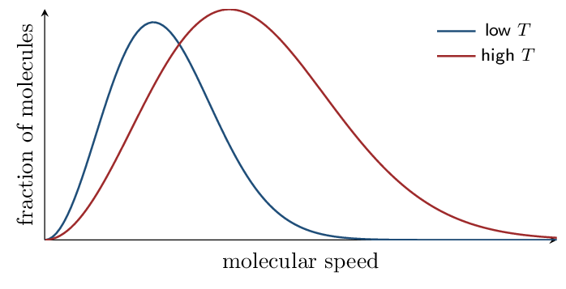
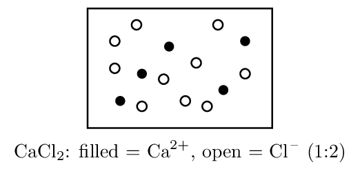

Intermolecular Forces Fri Sep 11
- Identify all intermolecular forces present in a substance.
- Rank substances by IMF strength, accounting for both polarity and polarizability.
Read: Zumdahl §10.1 • PDF pp. 493–498
- Is \(\ce{CCl4}\) polar? Why? no — tetrahedral, dipoles cancel
- Geometry of \(\ce{H2O}\): bent
- Which is more electronegative, N or H? N
INSTRUCTION A • The forces between particles 25 min
Interparticle forces, weakest to strongest CED 3.1
SP 1| Force | Present in | Origin |
|---|---|---|
| London dispersion (LDF) | ALL substances | instantaneous, temporary dipoles from electron motion |
| Dipole–dipole | polar molecules | permanent \(\delta^+\) attracted to \(\delta^-\) |
| Hydrogen bonding | H bonded to N, O, or F | an especially strong dipole–dipole case |
| Ion–dipole | ion \(+\) polar solvent | drives dissolving of salts |
Dispersion forces exist in everything, including polar molecules and ions. The question is never “does it have LDF” but “how strong are they.” Strength grows with the number of electrons — more electrons means a more polarizable electron cloud.
Hydrogen bonding is not a bond
It is an intermolecular attraction, roughly 5–10% as strong as a covalent bond. It requires H bonded directly to N, O, or F — \(\ce{CH3OH}\) qualifies through its O–H; \(\ce{CH3OCH3}\) does not (no H on O).
Zumdahl's Table 10.3 compares three molecules:
| Molecule | Forces present | bp ( | deg;C) |
|---|---|---|---|
| \(\ce{BI3}\) | LDF only | 209.5 | |
| \(\ce{PCl3}\) | LDF + dipole–dipole | 76.1 | |
| \(\ce{NH3}\) | LDF + hydrogen bonding | \(-33.0\) |
GUIDED PRACTICE • Identify and rank 15 min
List every IMF present:- \(\ce{CH4}\): LDF only
- \(\ce{HCl}\): LDF + dipole–dipole
- \(\ce{H2O}\): LDF + dipole–dipole + H-bonding
- \(\ce{NaCl}\) in water: ion–dipole
Rank boiling points, highest first: \(\ce{CH4}\), \(\ce{H2O}\), \(\ce{Kr}\) \(\ce{H2O}\) \(>\) \(\ce{Kr}\) \(>\) \(\ce{CH4}\)
INSTRUCTION B • What IMFs control 20 min
Properties that track IMF strength CED 3.1
SP 6Stronger IMFs \(\to\) higher boiling point, higher surface tension, higher viscosity, and lower vapor pressure.
Vapor pressure runs opposite to the others. Strong IMFs hold molecules in the liquid, so fewer escape — low vapor pressure. A liquid that evaporates readily (high vapor pressure) is called volatile and has weak IMFs.
APPLICATION • Structure to property 20 min
- \(\ce{C2H5OH}\) (bp 78 °C) vs \(\ce{CH3OCH3}\) (bp -24 °C). Same formula \(\ce{C2H6O}\). Explain the 100 °C gap.
- \(\ce{F2}\), \(\ce{Cl2}\), \(\ce{Br2}\), \(\ce{I2}\) are all nonpolar, yet their boiling points rise steadily down the group. Explain.
Which has the higher vapor pressure at room temperature: water or ethanol (bp 100 °C vs 78 °C)? Justify.
Solids and Phase Changes Mon Sep 14
- Classify solids by particle type and predict their properties.
- Explain phase changes and vapor pressure at the particle level.
Read: Zumdahl §10.2–10.7 • PDF pp. 498–523
- Strongest IMF in \(\ce{NH3}\): hydrogen bonding
- Do nonpolar molecules have LDF? yes
- Higher bp: \(\ce{Ne}\) or \(\ce{Xe}\)? Why? \(\ce{Xe}\) — more electrons, stronger LDF
- Vapor pressure and IMF strength are related how? inversely
INSTRUCTION A • Four kinds of solid 25 min
Classifying solids CED 3.2
SP 1| Type | Particles | Held by | Properties |
|---|---|---|---|
| Ionic | cations, anions | electrostatic attraction | high mp, brittle, conducts only molten/aqueous |
| Metallic | cations \(+\) e\(^-\) sea | delocalized electrons | conducts always, malleable, lustrous |
| Covalent network | atoms | covalent bonds | very high mp, hard, usually nonconducting (\(\ce{SiO2}\), diamond) |
| Molecular | molecules | IMFs | low mp, soft, nonconducting (ice, \(\ce{CO2}\)) |
Melting a molecular solid breaks intermolecular forces, never covalent bonds. Ice melting does not break O–H bonds — it breaks hydrogen bonds between molecules. Saying otherwise scores zero on the FRQ.
GUIDED PRACTICE • Classify from properties 15 min
- mp 1610 °C, hard, does not conduct: covalent network
- mp 801 °C, conducts when dissolved: ionic
- mp -57 °C, soft, nonconducting: molecular
- mp 1085 °C, conducts as a solid: metallic
INSTRUCTION B • Phase changes and vapor pressure 20 min
Energy and the phase diagram of behavior CED 3.3
SP 4During a phase change, added energy goes into overcoming IMFs, not raising temperature — so the heating curve shows a plateau.
Vapor pressure is the pressure of vapor in equilibrium with its liquid. It increases with temperature and decreases with stronger IMFs.A liquid boils when its vapor pressure equals the external pressure — which is why water boils below 100 °C at altitude.
APPLICATION • Reasoning about phases 20 min
- \(\ce{SiO2}\) melts at 1610 °C; \(\ce{CO2}\) sublimes at -78 °C. Both are “oxides of a group 14 element.” Explain the enormous difference.
- A sealed flask of water at 25 °C is warmed to 50 °C. Describe what happens to the vapor pressure and why, at the particle level.
Why does ice float on water? Answer at the level of structure and forces.
The Gas Laws Wed Sep 16
- Apply the ideal gas law and the combined gas law.
- Use Dalton's law of partial pressures and mole fractions.
Read: Zumdahl §5.2–5.5 • PDF pp. 229–251
- Type of solid: graphite (conducts, very high mp): covalent network
- Melting ice breaks what? hydrogen bonds (not O–H bonds)
- Molar mass of \(\ce{O2}\): 32.00 g/mol
INSTRUCTION A • The ideal gas law 25 min
\(PV = nRT\) CED 3.4
SP 5Temperature must always be in kelvin: \(T(\mathrm{K}) = T(^\circ\mathrm{C}) + 273.15\).
Forgetting the kelvin conversion is the single most common gas-law error. A Celsius temperature can be zero or negative — and \(PV = nRT\) with \(T = 0\) predicts zero pressure, which should immediately look wrong.
Combined gas law — when conditions change
Drop any quantity held constant. At constant \(n\) and \(T\): \(P_1V_1 = P_2V_2\) (Boyle). At constant \(n\) and \(P\): \(V_1/T_1 = V_2/T_2\) (Charles).
What volume does 2.00 mol of gas occupy at 27 °C and 1.50 atm? \[ V = \frac{nRT}{P} = \frac{(2.00)(0.08206)(300.)}{1.50} = 32.8\,\mathrm{L} \]
GUIDED PRACTICE • Gas calculations 15 min
- 1.00 mol gas at STP (273 K, 1.00 atm) occupies: 22.4 L
- A gas at 2.0 atm and 4.0 L is compressed to 1.0 L at constant \(T\). New pressure: 8.0 atm
- 0.500 mol gas in 5.00 L at 25 °C. Pressure? 2.45 atm
INSTRUCTION B • Mixtures of gases 20 min
Dalton's law of partial pressures CED 3.4
SP 5 Each gas in a mixture exerts pressure independently:A container holds 0.20 mol \(\ce{N2}\) and 0.30 mol \(\ce{O2}\) at a total pressure of 2.5 atm. \[ \chi_{\ce{O2}} = \frac{0.30}{0.50} = 0.60 \qquad P_{\ce{O2}} = 0.60 \times 2.5 = 1.5\,\mathrm{atm} \]
APPLICATION • Gas reasoning 20 min
- Two identical flasks at the same \(T\) and \(P\) hold \(\ce{He}\) and \(\ce{Ne}\). Compare the number of molecules and the total mass.
- A gas sample is heated from 27 °C to 327 °C at constant pressure. By what factor does its volume change?
A 3.0 L flask holds 1.0 mol \(\ce{N2}\) and 2.0 mol \(\ce{He}\). What fraction of the total pressure comes from helium?
Kinetic Molecular Theory Fri Sep 18
- State the KMT assumptions and use them to explain gas laws.
- Interpret Maxwell–Boltzmann distribution curves.
Read: Zumdahl §5.6–5.7 • PDF pp. 251–260
- Convert 25 °C to kelvin: 298 K
- \(P_A\) if \(\chi_A = 0.25\) and \(P_{\text{tot}} = 4.0\,\mathrm{atm}\): 1.0 atm
- Volume of 2.0 mol at STP: 44.8 L
INSTRUCTION A • The model behind the law 25 min
KMT assumptions CED 3.5
SP 1 An ideal gas is modeled as particles that:- are in constant, random motion;
- have negligible volume compared with the container;
- exert no attractive forces on one another;
- collide elastically (no kinetic energy lost);
- have average kinetic energy proportional to absolute temperature.
At a given temperature, all gases have the same average kinetic energy — but not the same speed. Since \(KE = \frac12mu^2\), heavier molecules must move slower to carry the same energy.
GUIDED PRACTICE • Explaining laws with the model 15 min
- Why does pressure rise when volume decreases at constant \(T\)?
- Why does pressure rise when temperature rises at constant \(V\)?
INSTRUCTION B • Maxwell–Boltzmann distributions 20 min
Reading the speed distribution CED 3.5
SP 4
As temperature rises the curve becomes broader and flatter, with its peak shifted right. The area under both curves is the same because it represents the total number of molecules.
The peak is the most probable speed, not the average, and not the maximum. And a heavier gas at the same temperature gives a narrower curve shifted left — same energy, less speed.
APPLICATION • Distribution reasoning 20 min
- \(\ce{He}\) and \(\ce{Ar}\) are at the same temperature. Sketch how their
distributions compare and justify.
He's curve is broader and shifted right (faster); Ar's is narrower and left. Same average KE, but \(u \propto 1/\sqrt{M}\), and He's molar mass is ten times smaller.
- Explain why raising the temperature increases the fraction of molecules above any given speed threshold.
Two gases at the same \(T\): which has the greater average kinetic energy, \(\ce{H2}\) or \(\ce{O2}\)? Which moves faster?
Real Gases Mon Sep 21
- Predict the conditions under which real gases deviate from ideality.
- Explain deviations in terms of molecular volume and attractions.
Read: Zumdahl §5.8–5.9 • PDF pp. 260–264
- Which KMT assumption says gas particles don't attract each other? assumption 3
- Faster at the same \(T\): \(\ce{N2}\) or \(\ce{Kr}\)? \(\ce{N2}\)
- Area under a Maxwell–Boltzmann curve represents: total molecules
- \(PV = nRT\): solve for \(n\). \(n = PV/RT\)
INSTRUCTION A • Where the model breaks 25 min
Deviations from ideal behavior CED 3.6
SP 6Two ideal assumptions fail under stress:
| Failed assumption | When it matters | Effect on measured \(PV/nRT\) |
|---|---|---|
| Particles have no volume | high pressure | actual volume is larger than ideal \(\to\) ratio \(>1\) |
| Particles don't attract | low temperature | attractions soften collisions, lowering \(P\) \(\to\) ratio \(<1\) |
Gases behave most ideally at high temperature and low pressure — particles are far apart (volume negligible) and fast-moving (attractions negligible).
Which gases deviate most?
Those with the strongest IMFs and largest molecules — so \(\ce{H2O}\) and \(\ce{NH3}\) deviate far more than \(\ce{He}\) or \(\ce{H2}\). This connects directly back to CED 3.1: deviation is an IMF story.
GUIDED PRACTICE • Predict the deviation 15 min
- Most ideal behavior: \(\ce{He}\) at 500 K & 0.1 atm, or \(\ce{NH3}\) at 200 K & 50 atm? He (hot, dilute, weak IMFs)
- At very high pressure, is measured \(V\) larger or smaller than ideal predicts? larger
- Which deviates more, \(\ce{CH4}\) or \(\ce{H2O}\)? Why in five words? \(\ce{H2O}\) — hydrogen bonding
INSTRUCTION B • Connecting to the equation 20 min
Correcting the ideal gas law CED 3.6
SP 5The van der Waals equation adjusts both failures: \[ \left(P + \frac{an^2}{V^2}\right)(V - nb) = nRT \] The \(a\) term corrects for attractions; the \(b\) term corrects for particle volume.
You will not be asked to compute with this on the AP exam, but you should be able to say which term addresses which failure.
APPLICATION • Explain the graph 20 min
A plot of \(PV/nRT\) versus \(P\) for \(\ce{CH4}\) at 200 K dips below 1 at moderate pressure, then rises above 1 at high pressure.
- Explain the initial dip.
- Explain the rise at high pressure.
- Predict how the curve changes at 500 K.
Under what two conditions does a real gas behave most ideally, and why?
Solutions and Concentration Wed Sep 23
- Calculate molarity and perform dilution calculations.
- Interpret and draw particulate representations of solutions.
Read: Zumdahl §4.1–4.3 • PDF pp. 169–182
Read: §11.1–11.3 • PDF pp. 545–563
- Gases are most ideal at what \(T\) and \(P\)? high \(T\), low \(P\)
- Which deviates more, \(\ce{Ne}\) or \(\ce{NH3}\)? \(\ce{NH3}\)
- Moles in 58.5 g \(\ce{NaCl}\): 1.00 mol
INSTRUCTION A • Molarity 25 min
Concentration CED 3.7
SP 5Note “liters of solution,” not liters of solvent — dissolving changes the volume.
What is the molarity of a solution made from 11.7 g \(\ce{NaCl}\) diluted to 250.0 mL? \[ n = \frac{11.7}{58.44} = 0.200\,\mathrm{mol} \qquad M = \frac{0.200}{0.2500} = 0.800\,\mathrm{M} \]
Dilution
Adding solvent changes volume but not moles of solute:Electrolyte dissociation
\(\ce{NaCl(aq)}\) gives 2 mol of ions per mole dissolved; \(\ce{CaCl2(aq)}\) gives 3. So 0.10 M \(\ce{CaCl2}\) is 0.20 M in \(\ce{Cl-}\).GUIDED PRACTICE • Concentration drill 15 min
- Molarity of 0.50 mol in 2.0 L: 0.25 M
- Moles in 500. mL of 0.20 M: 0.10 mol
- Dilute 50.0 mL of 6.0 M to 300. mL. New \(M\): 1.0 M
- \([\ce{K+}]\) in 0.15 M \(\ce{K2SO4}\): 0.30 M
INSTRUCTION B • Particulate representations 20 min
Drawing what's really there CED 3.8
SP 1 AP asks you to draw solutions. The rules:- Show ionic compounds as separated ions, never as intact \(\ce{NaCl}\) units.
- Show molecular solutes (sugar, ethanol) as whole molecules.
- Keep the correct ratio of ions.
- Water is usually omitted for clarity — say so in a caption.

APPLICATION • Solution reasoning 20 min
- How would you prepare 250. mL of 0.100 M \(\ce{KNO3}\) from solid? Give the mass and the procedure.
- Draw the particulate view of 0.10 M \(\ce{Na2SO4}\), showing
the correct ion ratio.
Twice as many \(\ce{Na+}\) as \(\ce{SO4^2-}\), all separated; sulfate may be drawn as a single labeled unit.
A student prepares a solution by adding 0.10 mol solute to exactly 1.00 L of water and calls it 0.10 M. What is wrong?
Solubility and Separation Fri Sep 25
- Predict solubility from structure using “like dissolves like.”
- Match a separation technique to the property it exploits.
Read: Zumdahl §11.2 • PDF pp. 551–559
Read: §1.10 • PDF pp. 53–57
- \([\ce{Cl-}]\) in 0.20 M \(\ce{MgCl2}\): 0.40 M
- Dilute 10. mL of 2.0 M to 100. mL: 0.20 M
- Strongest IMF in \(\ce{CH3OH}\): hydrogen bonding
INSTRUCTION A • Like dissolves like 25 min
Why things dissolve CED 3.10
SP 6Dissolving happens when solute–solvent attractions are comparable to the solute–solute and solvent–solvent attractions being replaced. So polar solvents dissolve polar and ionic solutes, and nonpolar solvents dissolve nonpolar solutes.
Zumdahl contrasts vitamin A and vitamin C. Vitamin A is mostly C and H — essentially nonpolar — so it dissolves in body fat but not water (hydrophobic). Vitamin C carries many O–H and C–O bonds, making it polar and water-soluble (hydrophilic). This is why fat-soluble vitamins accumulate in tissue while excess vitamin C is excreted.
For a long-chain alcohol, solubility in water falls as the carbon chain grows, because the nonpolar chain increasingly outweighs the polar O–H group.
GUIDED PRACTICE • Predict and justify 15 min
More soluble in water? Give the structural reason.- \(\ce{CH3OH}\) or \(\ce{CH3CH2CH2CH2CH3}\): \(\ce{CH3OH}\) — H-bonds with water
- \(\ce{NaCl}\) or \(\ce{I2}\): \(\ce{NaCl}\) — ion–dipole
- \(\ce{I2}\) in water or in \(\ce{CCl4}\): \(\ce{CCl4}\) — both nonpolar
INSTRUCTION B • Separation techniques 20 min
Exploiting a difference CED 3.9
SP 4Every separation exploits a difference in one physical property:
| Technique | Property exploited | Use |
|---|---|---|
| Filtration | particle size | solid from liquid |
| Distillation | boiling point | liquids that vaporize at different \(T\) |
| Chromatography | relative attraction to mobile vs stationary phase | mixtures of similar substances |
Chromatography in one sentence
A component with stronger attraction to the stationary phase moves slower; one attracted more to the mobile phase travels farther.
APPLICATION • Choose and justify 20 min
- Sand in salt water: name the technique(s) and the order.
- On a paper chromatogram (polar stationary phase, nonpolar solvent), which pigment travels farther — polar or nonpolar? Justify.
Ethanol (bp 78 °C) and water (bp 100 °C) are mixed. Name the separation technique and the property it exploits.
Spectroscopy and Beer–Lambert Mon Sep 28
- Relate wavelength, frequency, and photon energy.
- Match a region of the spectrum to the molecular transition it probes.
- Use \(A = \epsilon bc\) and a calibration curve.
Read: Zumdahl §7.1–7.2 • PDF pp. 332–340
Read: Appendix 3 • PDF pp. 1142–1144
- More soluble in water: \(\ce{C6H14}\) or \(\ce{C2H5OH}\)? \(\ce{C2H5OH}\)
- Chromatography separates by: relative attraction
- \([\ce{NO3-}]\) in 0.050 M \(\ce{Ca(NO3)2}\): 0.10 M
- Distillation exploits differences in: boiling point
INSTRUCTION A • Light and photons 25 min
The electromagnetic spectrum CED 3.11–3.12
SP 5Short wavelength \(\to\) high frequency \(\to\) high energy.
| Region | Energy | Transition probed |
|---|---|---|
| Microwave | lowest | molecular rotation |
| Infrared | low | bond vibration |
| UV–visible | high | electronic transitions |
The equations sheet gives \(E = h\nu\) but not \(\nu = c/\lambda\) — you must supply that step yourself when given a wavelength. Watch units: \(\lambda\) must be in meters.
GUIDED PRACTICE • Photon calculations 15 min
- Frequency of 500 nm light: \(6.00\times10^{14}\) s\(^{-1}\)
- Energy of one such photon: \(3.98\times10^{-19}\) J
- Which has more energy per photon, red (700 nm) or blue (450 nm)? blue
INSTRUCTION B • Beer–Lambert law 20 min
Concentration from absorbance CED 3.13
SP 4Because \(A\) is directly proportional to \(c\), a plot of \(A\) versus \(c\) is a straight line through the origin with slope \(\epsilon b\). That plot is a calibration curve: measure a set of known standards, then read an unknown off the line.
Standards give a calibration line \(A = 12.0\,c\) (with \(c\) in mol/L, \(b = 1.0\,\mathrm{cm}\)). An unknown reads \(A = 0.60\). \[ c = \frac{A}{\epsilon b} = \frac{0.60}{12.0} = 0.050\,\mathrm{M} \]
The slope is \(\epsilon b\), not the concentration. To find \(c\) you divide the unknown's absorbance by the slope — a very common mis-step under time pressure.
APPLICATION • Full spectroscopic analysis 20 min
A student measures these standards at 525 nm in a 1.00 cm cell:
| \(c\) (M) | 0.0020 | 0.0040 | 0.0060 |
|---|---|---|---|
| \(A\) | 0.150 | 0.300 | 0.450 |
- Determine the slope, with units.
\(0.150/0.0020 = 75\,\mathrm{/M}\) (i.e. \(\epsilon b = 75\,\mathrm{L/mol}\) with \(b = 1.00\,\mathrm{cm}\))
- An unknown gives \(A = 0.375\). Find its concentration. 0.0050 M
- Why must all measurements use the same wavelength and cell?
A solution's absorbance doubles. What happened to its concentration, and why?